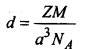

Chemistry
Chapter1: Solid State
1)Solids are substances which have fixed shape
and volume. 1’hey are characterised by rigidity, incompressibility, slow diffusion and mechanical strength.
They are classified as:
(a) Crystalline solids
(b) Amorphous solids .
2)The crystalline solids are further classified as:
(a) Metallic solids
(b) Ionic solids
(c) Covalent solids
(d) Molecular solids
3)A regular three dimensional arrangement of points in space is called a space lattice or crystal lattice. There are only 14 three-dimensional lattices known as Bravais lattices. The basic difference between the 14 Bravais lattices are the angles between the faces and the relative proportion of the sides.
4)A unit cell is the smallest unit of the crystal which when repeated again and again gives the crystal of the given substance.
5)There are three types of unit cells based on the cube. These are:
(a) Primitive or simple cube which has one constituent at each comer.
(b) Body-centred cube in which one constituent at the centre of the cube as well as one at each comer.
(c) Face-centred cube in which there is one constituent at the centre of each face as well as one at each comer.
6)A pure metal in the solid crystalline state is composed of atoms that are identical in shape and size. The identical spheres can be packed in a number of ways.
7)The number of nearest neighbours of an atom, ion or a molecule is called its coordination number.
8) In the hcp and ccp structures, about 74 percent of the available space is occupied by the spheres. In bcc arrangement, about 68 percent of the available space is filled up. In simple cubic structures, about 52.4 percent of the available space is occupied by the spheres.
9) The density of the unit cell,

Chapter2:Solutions
-
A solution is a homogeneous mixture of two or 9.
more chemically non-reacting substances.
The components of a solution generally cannot be separated by filtration, settling or centrifuging.
- A solution may be classified as solid, liquid or a gaseous solution.
- Solubility is defined as the amount of solute in a saturated solution per 100g of a solvent.
- The solubility of a gas in a liquid depends upon
(a) the nature of the gas and the nature of the liquid,
(b) the temperature of the system, and
(c) the pressure of the gas.
- The effect of pressure on the solubility of a gas in a liquid is governed by Henry’s Law. It states that the solubility of a gas in a liquid at a given temperature in directly proportional to the partial pressure of the gas Mathematically, P = KHX where P is the partial pressure of the gas; and X is the mole fraction of the gas in the solution and KH is Henry’s Law constant.
- The vapour pressure of a liquid is the pressure exerted by its vapour when it is in dynamic equilibrium with its liquid, in a closed container.
- According to Raoults Law, the vapour pressure of a solution containing a non-volatile solute is directly proportional to the mole fraction of the solvent ( XA). The proportionality constant being the vapour pressure of the pure solvent, i.e., P× XA or P = P° XA.
- A solution which obeys Raoult’s Law at all concentrations and temperatures is known as an ideal solution.
- Characteristics of an ideal solution:
(a) ∆sol V = 0, i.e., there is no change in volume when an ideal solution is formed.
(b) ∆sol H= 0; i.e., heat is neither evolved nor absorbed during the formation of an ideal solution.
- (a) The solution shows positive deviation from Raoult’s Law if its vapour pressure is higher than that predicted by Raoult’s Law.
(b) The solution shows negative deviation if its vapour pressure is lower than that predicted by Raoult’s Law
- Colligative properties of solutions are those properties which depend only upon the number of solute particles in the solution and not on their nature. Such properties are
(a) Relative lowering in vapour pressure,
(b) Elevation of boiling point,
(c) Depression of freezing point and
(d) Osmotic pressure.
Chapter3: Polymers
- A polymer is a large molecule of high molecular mass formed by the repetitive bonding of many small molecules called monomers.
The process by which the monomers are transformed into polymers is called polymerisation. As polymers are single big size molecules,
they are also called macromolecules.
- Classification of polymers on the basis of source:
(a) Natural polymers: Proteins, cellulose, starch, resins and rubber.
(b) Semi-synthetic polymers: Cellulose derivatives as cellulose acetate (rayon) and cellulose nitrate, etc.
(c) Synthetic polymers: Plastic (polythene), synthetic fibres (nylon 6, 6) and synthetic rubbers (Buna-S).
- Classification based on structure of polymers:
(а) Linear polymers: They consists of long and straight chains, e.g., high density polythene and PVC.
(b) Branched chain polymers: They contain linear chains having some branches, e.g., low density polyethene.
(c) Cross linked or Network polymers: Those are formed from bifunctional and tri-functional monomers and contain strong
covalent bonds between various linear polymer chains e.g, bakelite and melamine.
- Classification based on mode of polymerisation:
(a) Addition polymers: They are formed by the addition reactions between monomers having multiple bonds, e.g., polythene.
(b) Condensation polymers: They are formed by the condensation reactions between two monomers, each monomers having two functional
groups, with the elimination of small molecules such as water, alcohol and ammonia, e.g., Nylon 6,6.
- Classification based on molecular forces:
(a) Elastomers
(b) Fibres
(c) Thermoplastics.
(d) Thermosetting plastics
-
There are two broad types of polymerisation reaction:
(i) Addition or chain growth polymerisation: It is a polymersation in which monomers having one or more double bonds undergo repeated addition in a chain fashion in presence of an initiator to form a polymer. It is governed by free radical mechanism.
(ii) Condensation polymerisation or Step growth polymerisation: It occurs when monomers condense in a stepwise manner with elimination of water or other small molecules.
- Copolymerisation: It is a process in which a mixture of more than one monomeric species polymerize to form a copolymer. A copolymer contains multiple units of each monomer in the same polymeric chain. For example, styrene and methacrylate form a copolymer.
- Natural rubber is cis 1,4-polyisoprene. It is a linear 1,4-polymer of isoprene. It is manufactured from rubber latex which is a colloidal suspension of rubber in water.
- The process of heating a mixture of raw rubber and sulphur at 373 K to 415 K is known as vulcanisation of rubber. The process of vulcanisation is accelerated by additing additives such as ZnO.
- Biodegradable polymers: PHBV and Nylon 2- Nylon-6 are developed to minimise the environmental hazards of synthetic polymeric wastes.